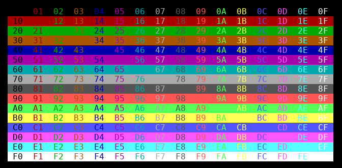

Index | Fejlesztés Development | CPU | Számítógép Computer | Assembler | Monitor | Függvények Library
Elmenti a kurzor aktuális pozícióját. Az elmentett pozícióba a tu_restore_cursor függvénnyel lehet a kurzort vissza mozgatni. Saves the current cursor position. The cursor can be restored to the saved position using the tu_restore_cursor function.
A kurzort mozgatja arra a pozícióra, melyet előzőleg a tu_save_cursor függvény segítségével elmentettünk. Restores the cursor to the position previously saved using the tu_save_cursor function.
A kurzor megjelenítését kikapcsolja. Turns off the cursor display.
A kurzor megjelenítését bekapcsolja. Turns on the cursor display.
Letörli a képenyőt, a képernyő az aktuális háttérszínű lesz. A kurzort a bal felső sarokba mozgatja. Clears the screen; it is be filled with the current background color. The cursor moves to the upper left corner.
A kurzor aktuális pozíciójára szöközt ír, vagyis az ott lévő karakterhelyet törli. A kurzor pozíciója nem változik. Writes a space at the current cursor position, effectively deleting the character there. The cursor position does not change.
A kurzort az R0-ban megadott számú karakter hellyel balra mozgatja. Moves the cursor to the left by the number of characters specified in R0.
A kurzort az R0-ban megadott számú karakter hellyel jobbra mozgatja. Moves the cursor to the right by the number of characters specified in R0.
A kurzort az R0-ban megadott számú karakter hellyel felfelé mozgatja. Moves the cursor up by the number of characters specified in R0.
A kurzort az R0-ban megadott számú karakter hellyel lefelé mozgatja. Moves the cursor down the number of characters specified in R0.
A kurzort a paraméterekben megadott pozícióra mozgatja. A bal felső sarok koordinátája: x=1, y=1. Moves the cursor to the position specified in the parameters. The coordinates of the upper left corner are: x=1, y=1.
Beállítja az előtér és a háttér színt, amelyek a következő kiírástól kezdve jutnak érvényre. A 0-7 közötti értékek a három alap szín (0.bit=piros, 1.bit=zöld, 2.bit=kék) keveréséből adódnak, a 8-15 közötti értékek ugyanezeket a színeket eredményezik "nagy intenzitással". A megjelenített színek az alkalmazott terminaál programtól függnek. Egyes programok esetén az alkalmazott szín profil konfigurálható is lehet. Sets the foreground and background colors, which takes effect from the next printout. Values from 0 to 7 represent a mixture of the three primary colors (bit 0=red, bit 1=green, bit 2=blue), while values from 8 to 15 produce the same colors in "high intensity". The colors displayed depend on the terminal program used. In some programs, the color profile may also be configurable.
Ha az előtér vagy a háttér szín paraméter negatív, akkor az a szín nem módosul. If the foreground or background color parameter is negative, its color will not be changed.
Az alábbi ábrán láthatók a kiválasztható háttér és előtér szín kombinációk. Az első hexadecimális számjegy a háttér színe, a második az előtér színe. The following figure shows the available background and foreground color combinations. The first hexadecimal digit is the background color, the second is the foreground color.

Az előtér (betű) szín beállítása a következő kiírás számára. A szín paramétert a tu_color függvénynél ismertetett módon kell megadni. Sets the foreground (font) color for the following outputs. The color parameter must be specified as described for the tu_color function.
A háttér szín beállítása a következő kiírás számára. A szín paramétert a tu_color függvénynél ismertetett módon kell megadni. Sets the background color for the following printouts. The color parameter must be specified as described for the tu_color function.
Fekete alapon fehér szín beállítása a következő kiírás számára. Sets white on black background for the following printout.
Fehér alapon fekete szín beállítása a következő kiírás számára. Sets black on white background for the following printout.
Fekete alapon zöld szín beállítása a következő kiírás számára. Sets green on black background for the following statement.